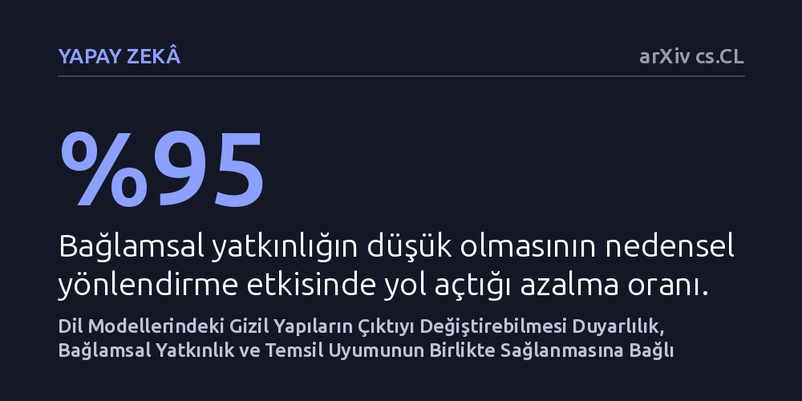

YAPAY-ZEKA · arXiv cs.CL · 2026-10-07
Araştırmacılar, dil modellerinin içsel aktivasyonlarındaki kavram yapılarının model davranışını ne zaman ve nasıl yönlendirebildiğini inceledi. Müdahalenin etkili olabilmesi için model duyarlılığı, bağlamsal yatkınlık ve temsil uyumunun aynı anda yüksek olması gerektiği ve nedensel yönlerin bağlama bağımlı olduğu saptandı.
Yapay zeka modellerini kontrol etmek için bir kavramın nerede temsil edildiğini bulmanın tek başına yetmediğini, müdahalenin ancak bağlama duyarlı üç kısıt birlikte aşıldığında işe yaradığını gösteriyor.

Büyük dil modellerinin nasıl akıl yürüttüğünü ve dili nasıl işlediğini anlamak için araştırmacılar sıklıkla bu sistemlerin içsel aktivasyon katmanlarını inceler. Bu katmanlarda dürüstlük, duygu durumu veya belirli bir konu gibi soyut kavramlara karşılık gelen gizil yapılar ve yönler tespit edilir. Yaygın kabul gören yaklaşım, eğer bir kavramın nerede kodlandığını bulabilirsek, o yöne dışarıdan küçük müdahaleler yaparak modelin çıktısını da rahatlıkla kontrol edebileceğimiz yönündedir.
Fakat son dönemdeki gözlemler bu varsayımı ciddi biçimde sarsıyor. Bir kavramı modelin içinde kusursuz bir doğrulukla tespit edebilen yönler, pratikte modele müdahale etmek için kullanıldığında çoğu zaman beklenen etkiyi yaratamıyor; hatta bazen modelin yanıtını hiç değiştirmiyor. Bu çelişki, araştırmacıları kritik bir soruyla yüzleştiriyor: Bir kavramın modelde var olması ile o kavramın model çıktısını yönetebilir olması arasındaki uçurumu ne belirliyor?
Araştırmacılar bu sorunu çözmek için bir kavram yönünün nedensel etkisini üç bağımsız kısıtın bileşimi olarak ele aldı: kapasite, yatkınlık ve temsil uyumu. Kapasite, modelin nihai çıktısının o gizil yön boyunca yapılan kaydırmalara ne kadar hassas olduğunu ölçerken; yatkınlık, mevcut bağlamın o kavramın öne çıkarılmasına ne derece elverişli olduğunu belirliyor. Temsil uyumu ise seçilen genel yönün, modelin o özel bağlamdaki anlık kavram temsiliyle ne kadar örtüştüğünü ortaya koyuyor.
Bu kuramsal çerçeveyi deneysel olarak doğrulamak amacıyla 4 farklı dil modeli ailesi ve 50 farklı kavram üzerinde kapsamlı testler gerçekleştirildi. Araştırma ekibi, modellerin aktivasyon uzaylarında hedef kavramlar yönünde müdahaleler uygulayarak her bir faktörün çıktıyı yönlendirme gücünü hem ayrı ayrı hem de birbirleriyle etkileşim halinde inceledi.
Deneylerden elde edilen veriler, nedensel etkinliğin ortaya çıkabilmesi için her üç faktörün de aynı anda yüksek seviyede bulunması gerektiğini gösterdi. İncelenen modellerde kapasite düşüklüğü nedensel etkiyi yüzde 84 oranında zayıflatırken, bağlamsal yatkınlığın yetersiz olması bu etkiyi yüzde 95 oranında azalttı. Temsil uyumunun düşük kaldığı senaryolarda ise müdahale tamamen ters tepti ve kavramı güçlendirmek yerine modelin o kavramı ifade etmesini engelledi.
Çalışmanın bir diğer çarpıcı keşfi, nedenselliğin sabit bir özellik olmadığını ve doğrudan metin bağlamına dayandığını kanıtladı. Modeli etkili şekilde yönlendiren yönlerin, bağlama göre değişen düşük boyutlu özel bir alt uzay oluşturduğu saptandı. Doğrusal algılayıcıların eğitimini bu alt uzayla sınırlandıran araştırmacılar, kavram tespitinde yalnızca yüzde 3'lük bir kayıp karşılığında modelleri yönlendirme başarısını yüzde 17 ila yüzde 118 arasında artırmayı başardı.
Bu çalışma, yapay zeka modellerini yönlendirme ve güvenli hale getirme yöntemlerine dair temel bir yanılgıyı düzeltiyor. Bir modelin içindeki bir kavramı tespit etmek, o kavram üzerinden modeli başarıyla yönetebileceğimiz anlamına gelmiyor. Modelin davranışını güvenilir biçimde kontrol edebilmek için her girdinin sunduğu bağlamı, modelin anlık hassasiyetini ve kavram yönelimini hesaba katan dinamik stratejiler geliştirmek şart.
Yazarların geliştirdiği nedensel algılayıcı yaklaşımı, modellerin istenmeyen çıktılar üretmesini engellemek ve onları istenen davranışlara yöneltmek için uygulanabilir bir mühendislik zemini sunuyor. Bununla birlikte, söz konusu yöntemin daha uzun ve çok adımlı akıl yürütme süreçlerinde nasıl tepki vereceği henüz araştırılmayı bekleyen önemli bir açık alan olarak duruyor.